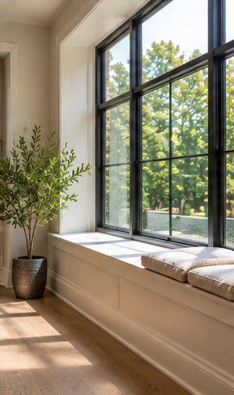

Exteriors / Renovation Journal
Windows, Daylight, and Renovation Design
Plan window changes around comfort, proportion, and performance.
Retrospective topic: December 2024 · Oakwaters Journal

A successful windows, daylight, and renovation design project begins with decisions that affect how the home works, not just how it looks. For homeowners in Ontario, the best results come from checking existing conditions, coordinating the relevant trades and making selections before work reaches the point where changes become expensive.
Study light through the day
A room that feels dim in winter may be bright in summer. Note window orientation, nearby buildings and tree cover. Consider glare and overheating as well as the desire for more daylight.
Before requesting prices, ask the contractor to explain how this part of the work will be assessed and what assumptions the estimate makes. Request photographs or a sketch when an important condition will be hidden after installation. A clear record helps distinguish an agreed scope from an unforeseen condition.
Size and place openings intentionally
Window height influences privacy, furniture placement and views. Larger glass areas are not always better if they remove useful wall space. Review exterior elevations so new openings suit the house.
Compare at least two realistic approaches using the same criteria: installation requirements, durability, maintenance and impact on adjacent work. A lower material price may not mean a lower installed cost. Ask which decisions must be finalized before products can be ordered.
Evaluate performance and installation
Compare whole-window thermal performance, air leakage, condensation resistance and appropriate glazing. Proper flashing and air sealing are as important as the window specification. Ask how installation connects to the existing wall assembly.
Walk through the proposed layout at full scale if possible. Tape dimensions on the floor or wall, check the position of existing services and test everyday movement. This simple exercise often reveals conflicts that are difficult to notice in a small drawing.
Coordinate structure and permits
New or enlarged openings may require headers or other structural work and municipal approval. Decide this before ordering windows. Confirm interior trim, exterior cladding and blinds together.
Confirm the sequence with the people doing the work. One trade may need to complete concealed preparation before another can install visible finishes. Record who supplies each item and who checks dimensions, because missing handoffs can cause delays and rework.
Control comfort after installation
Plan shading, operable ventilation and window coverings for actual use. Observe whether sunlight falls on screens or seating. The best design balances daylight, privacy, heat and the view.
At the final walkthrough, compare the completed work with the approved scope and product specifications. Ask for operating instructions, maintenance guidance and warranty documents where applicable. Photograph finished details and retain invoices and approvals for future reference.
Questions to ask before work begins
- Which existing conditions must be inspected before we commit to the windows, daylight, and renovation design scope?
- Which selections and dimensions must be confirmed before ordering?
- What work is excluded from the estimate, and how will changes be approved?
- Are any municipal permits, inspections or licensed trades required for this specific scope?
- How will completed work be inspected and documented?
A clear written scope, realistic sequencing and decisions made early are more valuable than rushing into demolition. If you are considering a renovation in the Guelph area, Oakwaters Construction can discuss the practical next steps for your home.
Planning a renovation?
Explore what is possible for your home with Oakwaters Construction.
Discuss Your Project →